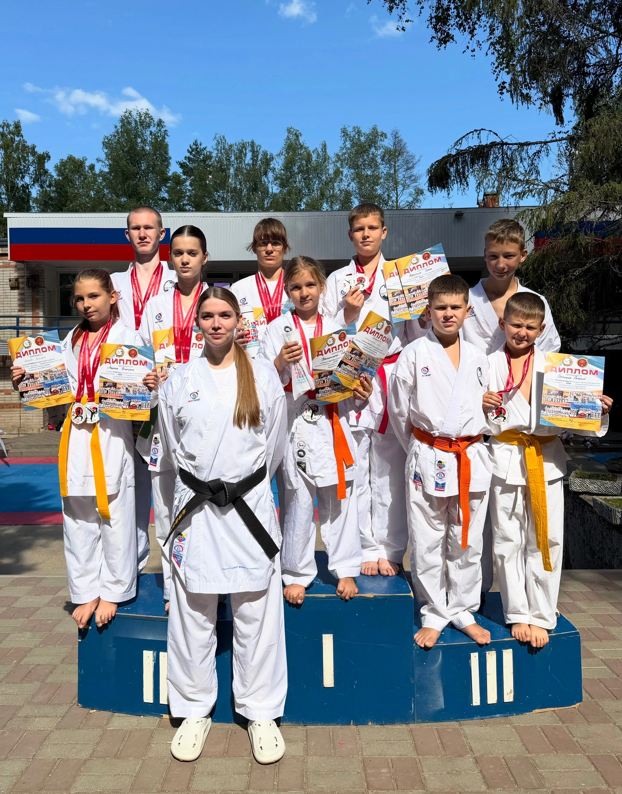
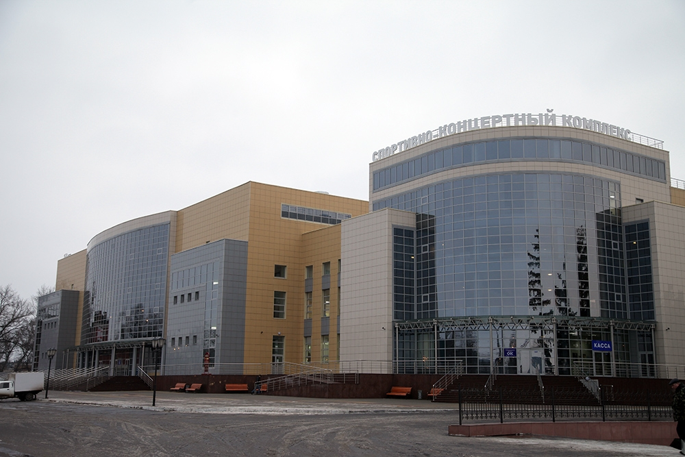
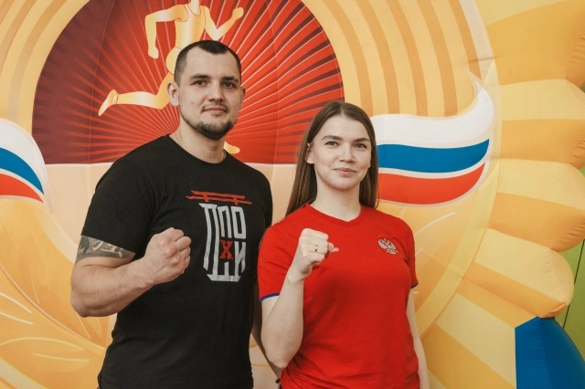
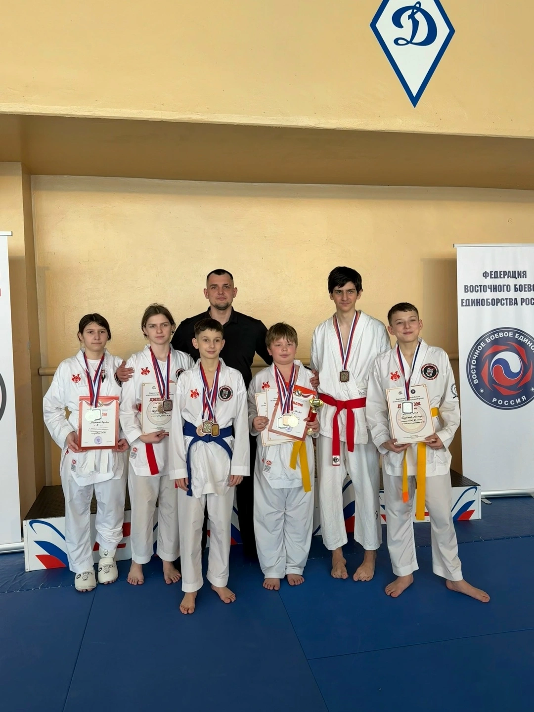
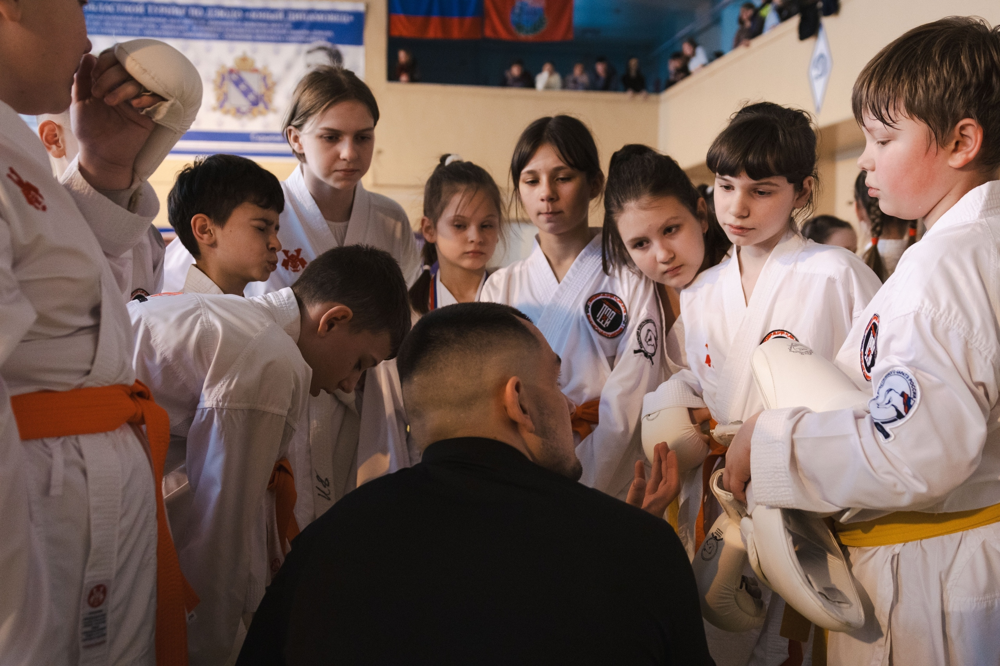

ДЕТЯМ
5–7 летПервые шаги в спорте, дисциплина, координация и уверенность.
01 / KARATE 空手
Федерация каратэ WKC Курской области
Путь, в котором японские традиции встречаются с современным спортом. Тренировки для детей, подростков и взрослых под руководством мастеров федерации.

心КОМУ ПОДХОДИТ
Неважно, каким ты приходишь сегодня.
Важно, кем станешь через год.

Первые шаги в спорте, дисциплина, координация и уверенность.

Физическая подготовка, характер, новые друзья и первые соревнования.

Сила, самоконтроль, спортивные цели и развитие характера.

Форма, техника, дисциплина и возможность начать с нуля.
Не нужно иметь спортивный опыт. Не нужно быть сильным. Первый шаг можно сделать в любом возрасте.
Попробовать первую тренировку →
ПОЧЕМУ КАРАТЭ
Каратэ помогает ребёнку становиться увереннее, дисциплинированнее и самостоятельнее.
ПУТЬ СПОРТСМЕНА
«Я просто попробую.»
Первый шаг всегда самый сложный. Новый зал, новые люди, первое знакомство с татами. Здесь не требуют быть сильным сразу — здесь учат становиться сильнее.

«Я уже умею.»
Появляется первый результат. Ребёнок начинает лучше контролировать своё тело, слушать тренера и замечать собственный прогресс.
«Я смогу.»
Первый выход на татами — момент, который запоминается надолго. Волнение превращается в концентрацию, а страх ошибиться — в желание попробовать ещё раз.

«Я сам не верю, как изменился.»
Больше уверенности. Больше дисциплины. Больше характера. И главное — ребёнок уже знает: если работать над собой, невозможное становится достижимым.
ТРЕНИРОВКИ
Четыре направления, которые развиваются вместе: от базовой техники до выступлений на татами.
Формальные комплексы — основа техники, ритма и концентрации.
Контролируемый спарринг: дистанция, тайминг и уважение к сопернику.
ОФП, координация, гибкость и выносливость — фундамент прогресса.
Тактика, психология выступления и уверенный выход на татами.
ТРЕНЕРЫ
Мастера федерации с опытом соревнований и преподавания. Нажмите на карточку, чтобы открыть полный профиль.
НАШИ ДОСТИЖЕНИЯ


ПУТЬ ФЕДЕРАЦИИ
История каратэ WKC в Курской области — как единомышленники со временем становятся командой.
Федерация объединяет спортсменов, тренеров и родителей вокруг каратэ и спортивного развития детей.
Тренеры помогают спортсменам не только осваивать технику, но и развивать дисциплину, характер и уверенность.
Тренировки становятся подготовкой к реальным испытаниям: соревнованиям, выступлениям и новым спортивным целям.
Федерация продолжает развивать спортивное направление и создавать среду, в которой ребёнок может расти вместе с командой.
ФЕДЕРАЦИЯ СЕГОДНЯ
Мы тренируем спортсменов здесь, но развиваемся вместе с единомышленниками из других регионов России.
Точка, где начинается путь спортсмена.
Спортсмены получают опыт не только на домашних стартах.
Выезды, встречи и спортивные связи расширяют возможности для роста.
Тренеры и спортсмены развиваются, когда работают не только внутри одного зала.
Больше связей.
Больше опыта.
Больше возможностей.
ГАЛЕРЕЯ
Моменты тренировок, выступлений и команды. Нажмите, чтобы открыть на весь экран.
АДРЕСА ТРЕНИРОВОК
ул. Ленина, 30
ТЦ «Пушкинский», 4 этаж
ул. 50 лет Октября, 141
 01
01
Президент Федерации
Основатель и руководитель федерации каратэ WKC в Курской области. Мастер спорта, обладатель 2 Dan, тренер международной федерации WKC. Более десяти лет ведёт спортсменов от первых шагов до чемпионских наград.
«Каратэ начинается и заканчивается вежливостью. Сила нужна лишь для того, чтобы не пришлось её применять.»
Старший тренер
Мастер спорта России, обладательница 2 Dan с более чем 17 годами практики каратэ. Более 9 лет ведёт тренерскую работу — от юных групп до сборной федерации. Многократная чемпионка, для которой каратэ — это и спорт, и воспитание.
«Главная победа — когда ученик верит в себя. Техника приходит, если рядом есть терпение и пример.»